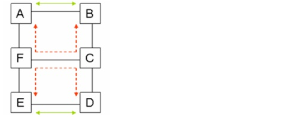

Failure Evaluation > Service Availability > Evaluating Service Availability: Workflow Description
Service Availability
You can use the Evaluate Availability operation to simulate link and node device failures. Given a set of routed connections and failure element, SP Guru Transport Planner calculates the expected availability (per capacity unit) and loss of traffic over the course of a year for each connection in the selected set.
Note—SP Guru Transport Planner can calculate the availability of OCH, DCL, and LOP connections.
Evaluating Service Availability: Workflow Description
Procedure 14-1 describes how to run an Evaluate Availability operation.
Procedure 14-1 Evaluating Service Availability
- Before you evaluate availability, you must specify the failure probabilities of all equipment in the network. You do this in the Availability Settings dialog box (Network > Availability Settings) or by clicking the Availability Settings button in the Info > Evaluate Availability dialog box. For more information, see Availability Settings.
- Choose Info > Evaluate Availability to open the Evaluate Availability dialog box. (shown in Evaluate Availability Dialog Box).
- Select the Analysis Method. SP Guru Transport Planner can evaluate the service availability in an analytical way or by failure simulation. In the latter method, different failure scenarios (combining the selected failure elements) are simulated to inspect their impact on the selected traffic.
Note—The analytical method does not give exact results for traffic accommodated in the network with shared path protection or with restoration. In that case, the traffic is treated as unprotected traffic. This implies that the calculated value for the availability is a lower bound for the exact value.
- Specify the Simulation Options. If you have selected the simulation method, some extra parameters must be set:
- Maximum Number of Simultaneous Failures—This parameter is used to limit the number of failure scenarios considered by the simulation method. For example, if this number is two, only failure scenarios with zero, single, and double failures are simulated to calculate the availability of the traffic. Thus, the higher this number is set, the more precise the calculated value for the availability will be. However, a higher number also increases the calculation time.
- Maximum Number of Simultaneous Failures to Restore for Shared Path Protection—This parameter is used to limit the number of failure scenarios in which shared path protection is considered. For example, if this number is set to two, the connection accommodated in the network with shared path protection are assumed to be unprotected in the failure scenarios with more than two simultaneous failures.
- Maximum Number of Simultaneous Failures to Restore for Link or Path Restoration—This parameter is used analogously to the previous parameter. This parameter is used to limit the number of failure scenarios in which link or path restoration is considered.
- Connection Order For Restoration —This parameter is used in case link or path restoration or shared path protection is applied in the network. This parameter prioritizes one connection above the other to use the protection capacity available in the network. Consider this example:
Figure 14-1 Connection Order for Restoration Example

In this example, two connections are accommodated with shared path protection in the network: a connection between node A and B and a connection between node E and D. Both protection paths are routed along the link between nodes F and C (marked in red in the figure above). The protection capacity on the link between C and F is shared among both connections. However, if the link between A and B and the link between E and D both fail, there is not enough protection capacity between F and C to restore both connections. In that case, the Connection Order for Restoration parameter determines which connection is restored. For example, assume the distance between A and B is higher than the distance between E and D. If the sorting order parameter is set to "Longest First," the connection between A and B is restored, while the connection between E and D cannot be restored and is failing. However, if the sorting order is set to "Shortest First," the connection between E and D is restored and the other connection fails.
- Select the connections for which you want to calculate the availability in the Traffic To Analyze section. Only connections accommodated in the network are selectable.
Note—The connections part of an OCH or DCL traffic matrix that has been created by the grooming algorithm are not displayed in the Traffic To Analyze connection list.
- Select failure elements in the Failure Elements To Analyze section. Only the selected failure elements are taken into account while calculating the availability. SP Guru Transport Planner supports the following failure elements.
- Cable Failures—Each OTS link in the network is displayed in this list. If a cable fails, traffic can no longer traverse this cable.
- OTS Node Failures—Each OTS node in the network is displayed in this list. If an OTS node fails, each switching device in this node fails. This implies that no traffic can be switched, added or dropped in each switching device present in this node (e.g. OXC, patch panel, DXC, TMs,...).
- OXC Failures—Each OXC present in the network is displayed in the list. If an OXC fails, it is no longer possible to switch, add or drop traffic in that OXC. Note that each node can contain one OXC at most.
- OADM Failures—Each OADM present in the network is displayed in the list. If an OADM fails, it is no longer possible to switch, add or drop traffic in this OADM. Note that a node can contain more than one OADM. An OADM is defined by its node name and the name of its incoming fiber(s).
- Patch Panel Failures—The list displays each patch panel present in the network. If a patch panel fails, it is no longer possible to switch, add or drop traffic in this patch panel. Note that each node can contain one patch panel at most.
- IXC Failures—This list displays each IXC present in the network. If an IXC fails, it is no longer possible to switch, add or drop traffic in this IXC. Note that each node can contain one IXC at most.
- DXC Failures—Each DXC present in the network is displayed in this list. If a DXC fails, it is no longer possible to switch, add or drop traffic in this DXC. Note that each node can contain one DXC at most.
- ADM Failures—Each ADM present in the network is shown in this list. If an ADM fails, traffic can no longer be added or dropped at this ADM. A node can contain more than one ADM. Each ADM is defined by its node and its ring name.
- SDH TM Failures—This list shows every SDH TM present in the network. If an SDH TM fails, DCL traffic can no longer be added or dropped at this TM. A node can contain more than one SDH TM. Each SDH TM is defined by its node name and the name of the incoming DCL trunk.
- LOP TM Failures—This list shows every LOP TM present in the network. If a LOP TM fails, LOP traffic can no longer be added or dropped at this LOP TM. A node can contain more than one LOP TM. Each LOP TM is defined by its node name and the name of its incoming DCL connection.
- In-line Regenerator Failures—If an in-line regenerator fails, traffic can no longer traverse the fibre attached to the in-line regenerator. Note that a fibre can contain more than one regenerator. However, one in-line regenerator failure is displayed per fibre in the In-line Regenerator Failures list. The availability of such failure equals: (availability of one in-line regenerator)n (where n = number of in-line regenerators on the fibre).
- Optical Amplifier Failures—If an optical amplifier fails, traffic can no longer traverse the fibre attached to the optical amplifier. Note that a fibre can contain more than one optical amplifier. However, one optical amplifier failure is displayed per fibre in the Optical Amplifier Failures list. The availability of such failure equals: (availability of one optical amplifier)n (where n = number of optical amplifiers on the fibre).
- Transponder Failures—If an LR transponder fails, each OCH connection path using this transponder fails. The LR transponders are displayed per OCH node and per path of an OCH connection. Note that the OCH connection can drop or add in the node, or can traverse the node. In the latter case, the path traverses two LR transponders. Therefore, the availability of such failure equals: (availability of one LR transponder)2. In case of 1+1 protection, the number of transponders in an end node of a connection depends on the client protection option. If the connection is client protected, there are two LR (regular) transponders in each of its end nodes: one for the working path and one for the protecting path. However, in case of non-client 1+1 protection, only one LR (protection) transponder is present in each end node. If such a transponder fails, the working and the protecting path of the connection are failing (implying the connection fails).
- After you have specified the analysis method, the simulation options (if applicable), the traffic and failure elements to analyze, click Evaluate.
SP Guru Transport Planner evaluates your network and displays the results in the Availability Analysis report. This web report pops up automatically once the availability calculation has been finished.
End of Procedure 14-1
| Home © 1987-2007 OPNET Technologies, Inc. All Rights Reserved. This software may be covered by one or more U.S. Patents. See complete patent notice in the Legal Notices section. OPNET Support Center |